Small paws. Big personality.
Meet
Ricecake.
My lovely dog, and a little collection of our happy moments together.
Explore his photo albumLife with Ricecake
31 photos · Click a photo to take a closer look

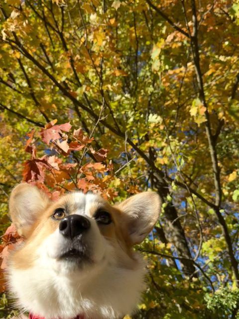

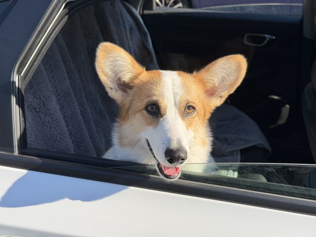

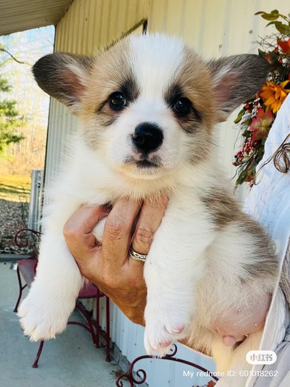

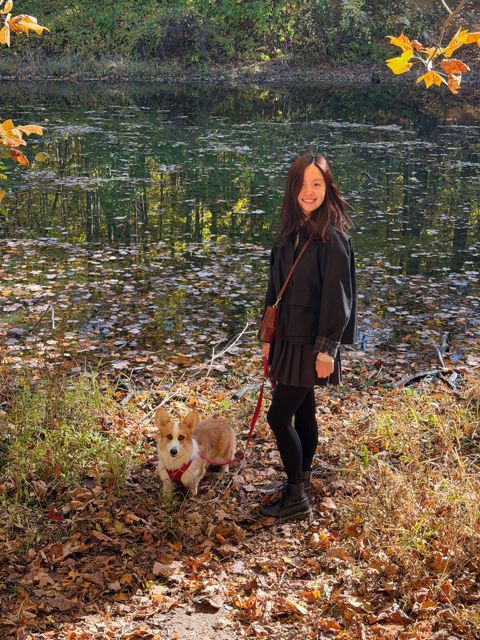

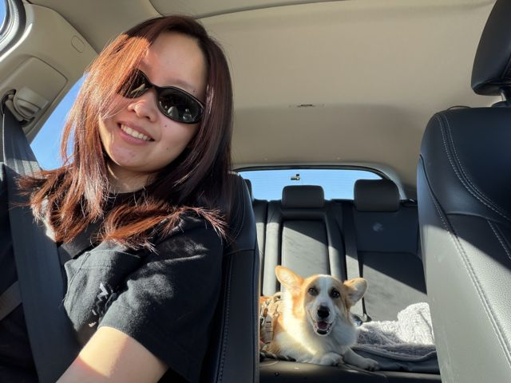

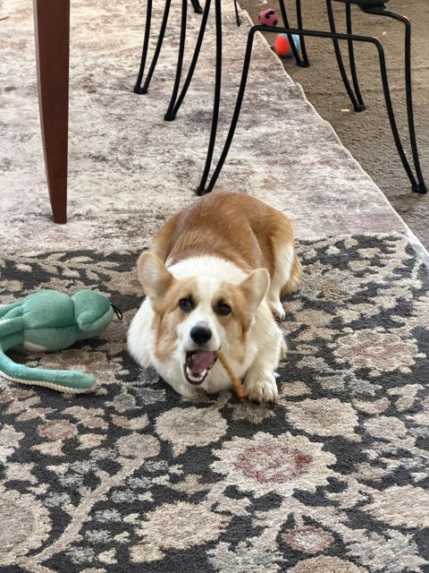

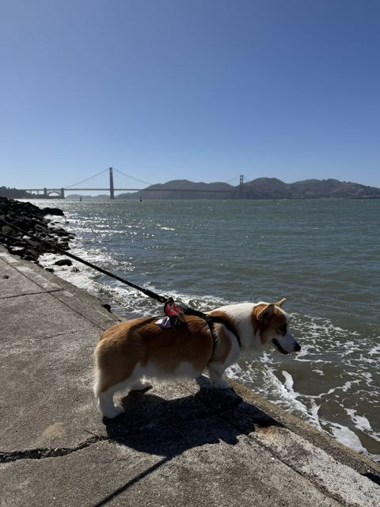

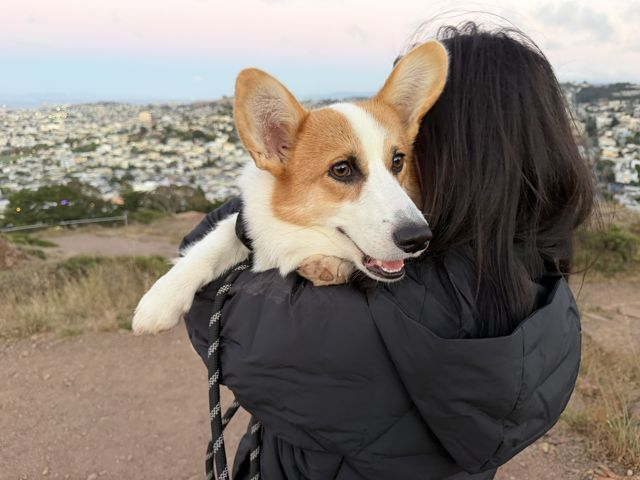

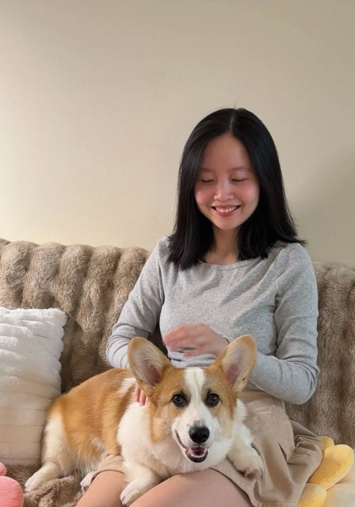

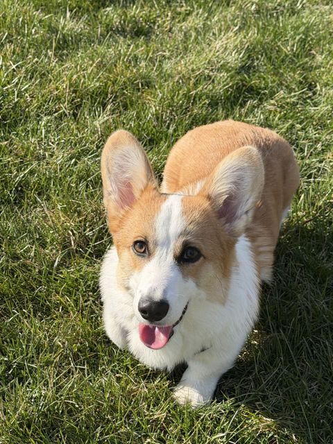

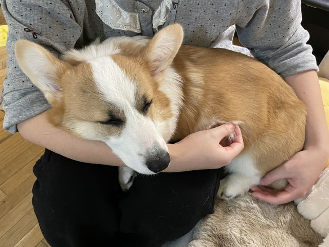

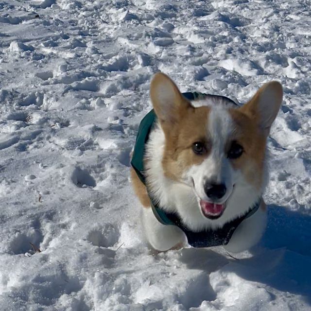

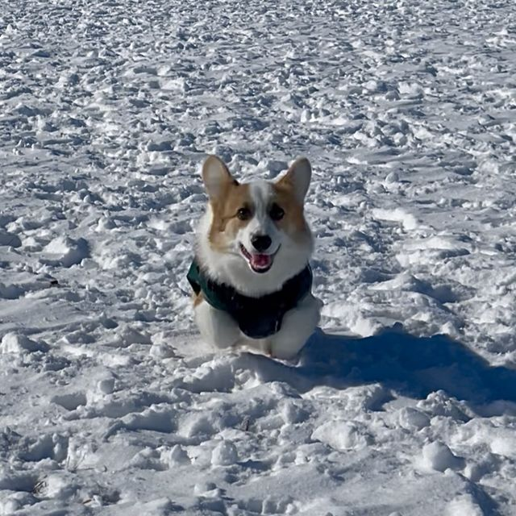

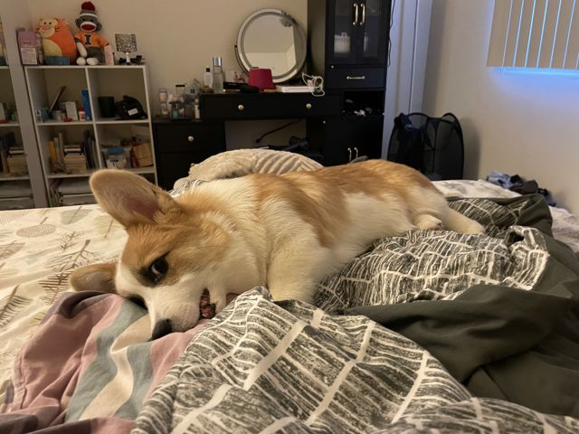

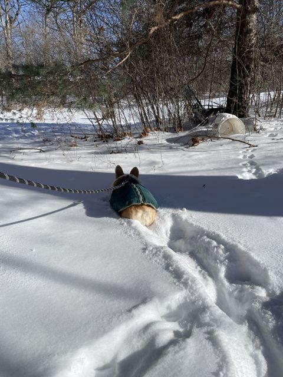

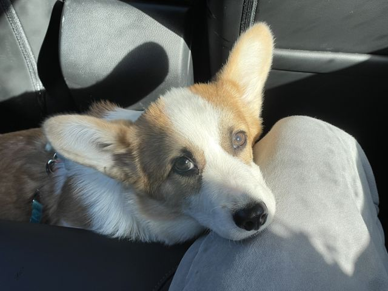

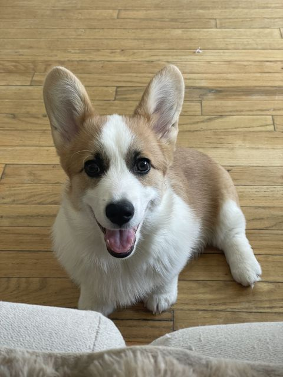

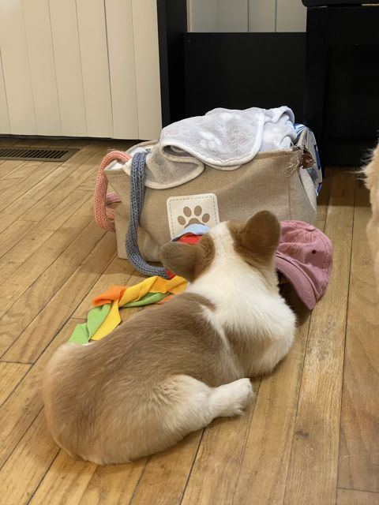

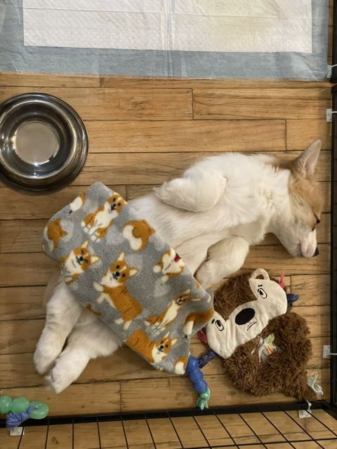

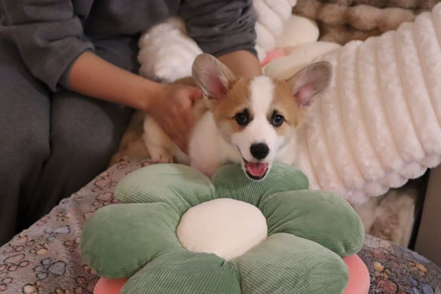

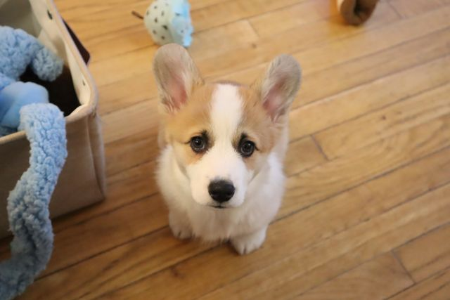

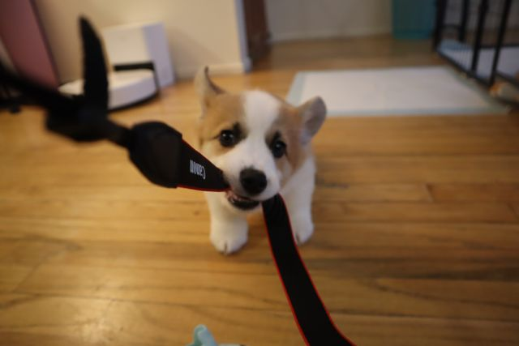

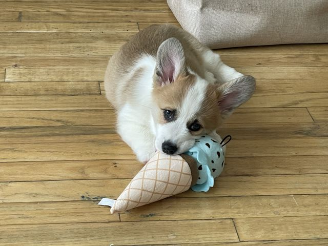

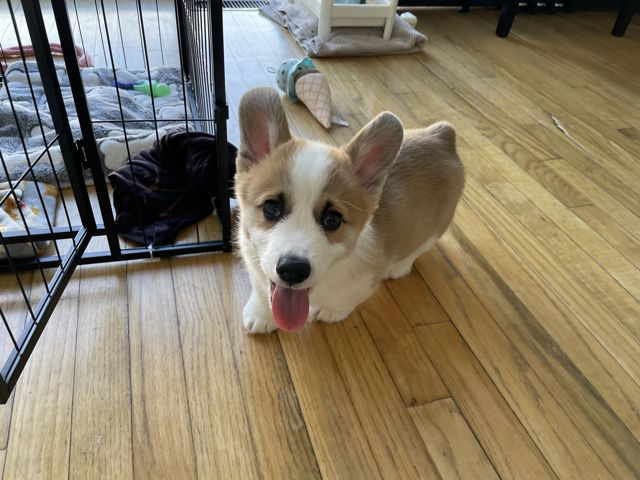

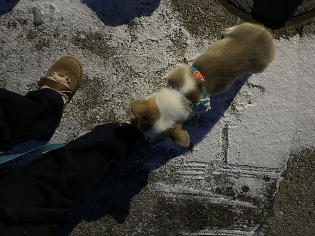

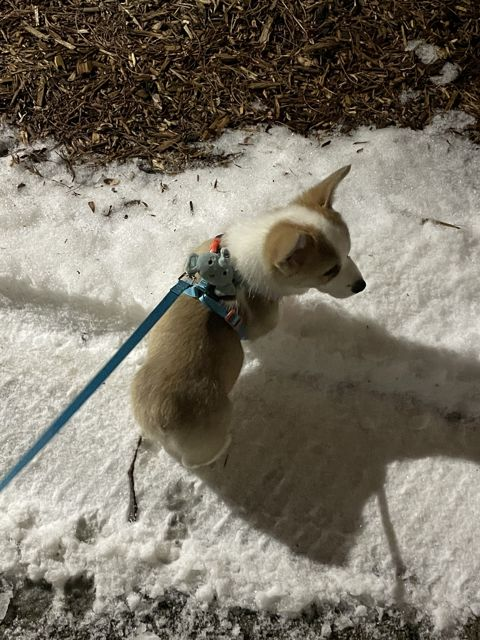

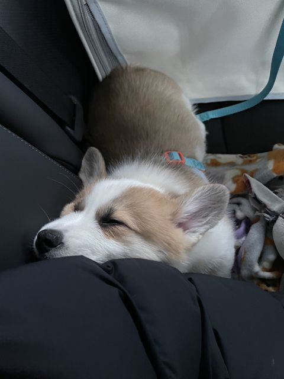

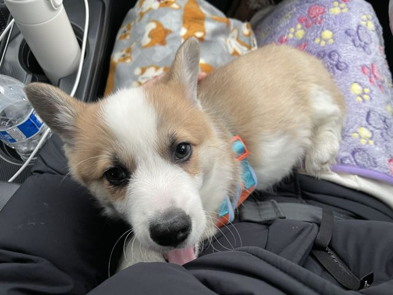

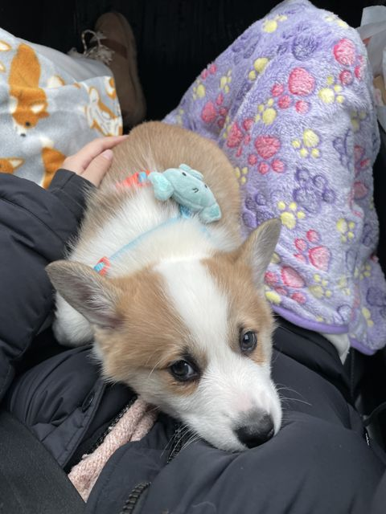

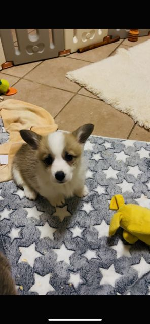

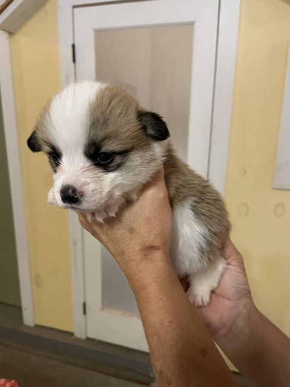